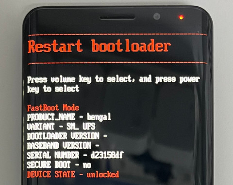

Steward
分享是一種喜悅、更是一種幸福
手機 - F(x)tec Pro1 X - Ubuntu Touch - 安裝系統
參考資料：
https://community.fxtec.com/topic/3597-pro1-x-with-ubuntu-touch/
步驟如下：
1. 進入Fastboot模式並且解鎖
$ sudo fastboot flashing unlock

2. 下載https://gitlab.com/ubports/porting/community-ports/android11/fxtec-pro1x/fxtec-pro1x/-/jobs
3. 命令如下：
$ cd $ wget https://github.com/steward-fu/website/releases/download/pro1/platform-tools_r33.0.3-linux.zip $ unzip platform-tools_r33.0.3-linux.zip $ mv platform-tools /tmp $ export PATH=/tmp/platform-tools:$PATH $ unzip artifacts.zip $ cd out $ fastboot format:ext4 userdata $ fastboot --set-active=a $ fastboot flash recovery recovery.img $ fastboot reboot fastboot $ fastboot flash system_a system.img $ fastboot flash boot_a boot.img $ fastboot flash dtbo_a dtbo.img $ fastboot reboot
P.S. 如果原本系統是Android，才需要做fastboot format:ext4 userdata
完成